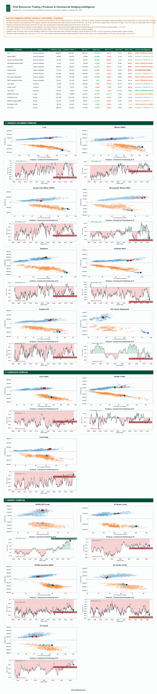
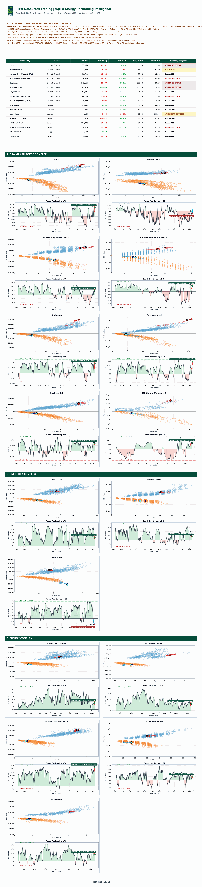


Quantitative Positioning & Hedging Model • Report As of 2026-09-29 • CFTC, ICE Europe & Euronext MATIF
The CFTC Commitments of Traders (COT) report is the single most authoritative positioning record in global derivatives markets. Released weekly on Friday at 3:30 PM Eastern Time (reflecting positions held as of the close of business on the preceding Tuesday), the COT report provides a transparent window into the balance sheet allocations of commercial hedgers, speculative hedge funds, and financial intermediaries.
To use positioning effectively, a trader must answer three fundamental questions: (1) Who is in the market? (2) What is their underlying commercial or quantitative incentive? and (3) How much untapped capital ("Dry Powder") remains to sustain the trend?
Why the CFTC evolved from 3 broad categories to modern disaggregated and financial models.
Historically, the CFTC published a single Legacy Report. However, financial engineering and the explosion of commodity index investments in the 2000s broke the legacy model's assumptions. Today, the CFTC publishes three distinct report structures depending on the underlying asset class:
| Report Type | Markets Covered | Classifications | Key Nuance & Practical Use |
|---|---|---|---|
| 1. Legacy COT Since 1986 |
All commodities, indices, rates, and currencies. |
• Commercial • Non-Commercial (Speculators) • Non-Reportable (Retail) |
Advantage: Longest continuous historical data (>35 years). Fatal Flaw: Lumps Swap Dealers (banks hedging index swaps) into "Commercials", severely distorting the true physical hedging picture. |
| 2. Disaggregated COT Since 2009 |
Physical Commodities: Agriculture (Grains, Softs, Livestock), Energy (Crude, Gas), Metals. |
• Producer / Merchant / Processor / User (P/M/P/U) • Swap Dealers • Managed Money • Other Reportables • Non-Reportable |
The Gold Standard for Commodities. Successfully separates real physical hedgers (farmers, crushers, refiners) from bank swap desks and speculative trend followers (CTAs). Used in our Agri & Energy models. |
| 3. Traders in Financial Futures (TFF) Since 2010 |
Financial Contracts: Equity Indices (S&P 500, Nasdaq), US Treasuries, SOFR, FX, VIX. |
• Dealer / Intermediary • Asset Manager / Institutional • Leveraged Funds • Other Reportables • Non-Reportable |
Designed specifically for financial markets where there are no physical "producers". Distinguishes long-term real-money capital (Asset Managers) from levered hedge funds and liquidity-providing broker-dealers. |
Understanding the structural motives behind each category in Agriculture, Energy, and Metals.
In physical commodities, participants have drastically different risk appetites, time horizons, and mandate constraints. Here is how to profile each participant:
Who They Are: Systematic Commodity Trading Advisors (CTAs like Aspect, Man AHL, Winton, Systematica), quantitative momentum funds, and discretionary macro hedge funds.
Core Motivation: Profit from directional price momentum. They hold zero physical grain, oil, or cattle and intend to close or roll 100% of contracts before delivery.
Behavioral Reaction Profile:
Who They Are: The real physical supply chain: grain elevators, farmers, agribusiness giants (ADM, Bunge, Cargill, Louis Dreyfus - the "ABCDs"), soybean crushers, livestock feedlots, oil refineries, and plantation groups like First Resources.
Core Motivation: Balance sheet risk management. Protect margins against adverse cash market price swings. They produce, handle, or consume the physical commodity.
Behavioral Reaction Profile:
Who They Are: Global investment banks (Goldman Sachs, Morgan Stanley, JPMorgan, Citi, Macquarie).
Core Motivation: Neutral market-making. They intermediate OTC commodity swaps for pension funds, sovereign wealth funds, and institutional index trackers (e.g. BCOM, S&P GSCI).
Behavioral Reaction Profile:
Other Reportables: Large proprietary trading firms, energy utility trading desks, corporate treasuries, or family offices that trade sizes above reporting thresholds but do not meet the definitions of CTA or P/M/P/U.
Non-Reportable (Retail & Small Hedgers): Traders holding positions below the CFTC reporting threshold (e.g., <250 contracts in Soybeans). Represents retail sentiment and small commercial operators.
Behavioral Reaction Profile: Non-reportables are often late to trends and heavily susceptible to chasing tops or panic-selling bottoms.
Case study: How Managed Money, Commercial Crushers, and Exporters interact across the cycle.
To understand the COT report in practice, consider the CBOT Soybean Complex (Soybeans, Soybean Meal, Soybean Oil):
Suppose a severe drought hits the US Midwest in July/August or Brazil's Mato Grosso in December:
How processors (ADM, Bunge, Cargill) hedge the physical industrial processing margin:
Why hedge funds are structurally short S&P 500 futures and how VIX contango drives volatility.
In the Traders in Financial Futures (TFF) report, market classifications reflect financial balance sheets:
| TFF Participant | Real-World Entities | Typical Positioning | Interpretation & Trading Signals |
|---|---|---|---|
| Asset Manager / Institutional | Vanguard, BlackRock, pension funds (CalPERS), endowment funds, life insurers. | Structurally Long | Real-money investors holding passive equity beta for long-term compounding. Weekly fluctuations reflect macro asset allocation rotations (e.g. moving from cash to equities or rebalancing quarterly). |
| Leveraged Funds | Long/short equity hedge funds, statistical arbitrage desks, systematic CTAs. | Frequently Net Short | The Great Misconception: Retail traders see hedge funds heavily net short S&P 500 or Nasdaq futures and assume they are "bearish on the economy". In reality, hedge funds hold billions in long individual single stocks (alpha) and use index futures to hedge market beta! |
| Dealer / Intermediary | Wall Street market-making desks (Goldman, Morgan Stanley, Citadel Securities). | Dynamic / Hedging | Positioned opposite institutional client option and swap flows. Their futures positioning often mirrors gamma hedging requirements (buying futures as markets rise or selling as markets fall). |
When Leveraged Funds reach extreme net short positioning (<=5th percentile) in E-mini S&P 500 or Nasdaq-100 futures:
The institutional market is fully insured. Cash allocations are high and downside protection is in place. In this state, negative economic news fails to push the market lower because everyone who needed to hedge has already hedged. If the market begins ticking upward, hedge funds are forced to buy back index futures to prevent underperformance, triggering a vicious "pain trade" rally.
In volatility markets, the term structure is normally in steep contango (deferred months trade higher than spot VIX):
Quantitative funds and volatility-harvesting strategies short VIX futures to capture the positive roll decay. Consequently, Leveraged Funds are structurally net short VIX futures. However, when VIX net short positioning reaches historical records (>95th percentile), the market becomes brittle: any unexpected geopolitical or financial shock forces a violent short squeeze on VIX futures ("Volmageddon" risk).
Why Leveraged Funds hold massive record short positions in 10-Year and 2-Year Treasury futures.
In US Treasury futures (10-Year Ultra, 10-Year Note, 2-Year Note, 30-Year Bond), financial commentary frequently reports headlines like: "Hedge funds hold record short bets against US government debt!". To an institutional trader, this is almost always a fundamental misunderstanding of the Treasury Basis Trade.
Record net short positioning by Leveraged Funds in 10Y Treasuries does NOT indicate hedge funds are predicting surging bond yields. It simply measures the colossal scale of the cash-futures arbitrage trade absorbing US government debt issuance.
If repo financing rates suddenly spike (as in Sept 2019) or the CME raises futures margin requirements (as in March 2020), hedge funds are forced to rapidly unwind the trade by buying back Treasury futures and dumping cash bonds. This triggers an abrupt, violent surge in Treasury futures prices (yields collapse).
The mathematical methodology driving the First Resources Positioning Intelligence Dashboard.
Raw contract counts are deceptive because market size expands over time. Our quantitative engine employs four rigorous mathematical transformations to generate reliable institutional signals:
Formula:
Normalizes positioning relative to market depth. A 50,000 net long in 2004 (when OI was 200k = 25% of OI) is vastly different from 50,000 net long in 2026 (when OI is 1,500k = 3.3% of OI). Net % of OI allows true cross-decade comparisons.
Lookback Horizons: 1-Year (tactical), 3-Year (medium cycle), 20-Year (all-time secular).
Evaluates whether current positioning is statistically stretched relative to history. Percentiles >= 90th signify historically extreme crowding; <= 10th signify extreme liquidation or short squeeze vulnerability.
Definition: The reserve capacity remaining for market participants to enter new positions:
If Long %ile is 98%, Long Dry Powder is just 2%. Buying power is completely exhausted. Any marginal seller triggers an outsized collapse.
The Core Edge: When Managed Money and Commercial Hedgers diverge to opposite extremes.
When funds are maximally net short (exhausted selling) while physical commercial producers are accumulating long hedges, this is the highest-probability cyclical bottom indicator in global commodities.
| Positioning Regime | Speculator State | Commercial State | Risk Asymmetry | Trading Desk Playbook |
|---|---|---|---|---|
| 🚨 Peak Long Crowding | Net % OI ≥ 90th %ile Long Dry Powder ≤ 10% |
Heavy / Record Short (Aggressive forward selling) |
Extremely Bearish | Do NOT chase breakout longs. Tighten stop losses. Commercial selling is absorbing speculative bids. High risk of sharp liquidation cascades. |
| ⚡ Short Squeeze Setup | Net % OI ≤ 10th %ile Short Dry Powder ≤ 10% |
Producer hedges depleted Consumer buying active |
Extremely Bullish | Prepare for explosive squeeze. Speculator selling capacity is exhausted. Any positive fundamental catalyst triggers a panicked rush to cover shorts. |
| 📈 Momentum Expansion | Net % OI crossing 50th from below Open Interest expanding |
Normal hedging flow | Trend Following | Follow trend with CTAs. High remaining Long Dry Powder (>50%). Algorithmic funds are actively adding capital, providing upward momentum. |
| ⚖️ Sidelined / Uncommitted | Long %ile ≤ 35% & Short %ile ≤ 45% |
Balanced | Neutral / Mean-Reverting | Range-bound trading. Both sides hold abundant dry powder. Market lacks conviction and awaits major fundamental or macro catalysts. |
Commercial forward producer selling, processor coverage, and 20-yr hedging intensity percentiles.

Targeted edition for agricultural and energy trading desks focusing on Managed Money funds.

High-resolution master positioning across all 6 complexes with 10-session momentum trails.
